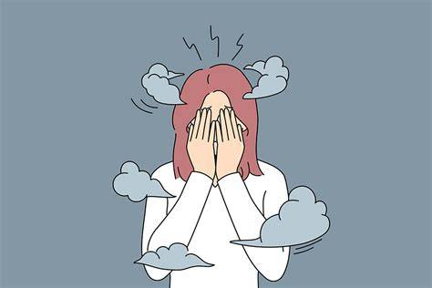

¿Que es la ansiedad?
La ansiedad es una emoción natural de temor o inquietud ante situaciones de estrés o amenaza, que se vuelve un trastorno si es desproporcionada, duradera (más de 6 meses) y afecta la vida diaria. Provoca síntomas físicos (palpitaciones, sudoración) y psicológicos (preocupación excesiva, miedo), y se trata eficazmente con psicoterapia y/o medicamentos.
Trastorno por crisis de angustia, en el que la ansiedad se presenta de forma episódica como palpitaciones, sensación de ahogo, inestabilidad, temblores o miedo a morirse.
Trastorno de ansiedad generalizada, con un estado permanente de angustia.
Trastorno fóbico, con miedos específicos o inespecíficos.
Trastorno obsesivo-compulsivo, con ideas intrusivas y desagradables que pueden acompañarse de actos rituales que disminuyen la angustia de la obsesión (lavarse muchas veces por miedo a contagiarse, comprobar las puertas o los enchufes, dudas continuas).
Las causas fundamentales son los factores genéticos, existiendo una predisposición al trastorno, aunque se desconoce su contribución exacta y el tipo de educación en la infancia y la personalidad, presentando mayor riesgo aquellas personas con dificultad para afrontar los acontecimientos estresantes.
Entre los factores precipitantes de la enfermedad estarían los acontecimientos estresantes, en particular las dificultades en las relaciones interpersonales, las enfermedades físicas y los problemas laborales.
La ansiedad en la adolescencia no siempre se presenta como una crisis evidente. A menudo se esconde en gestos cotidianos, en cambios pequeños pero persistentes. Por eso es tan importante que madres, padres y cuidadores estén atentos, no desde el miedo, sino desde el acompañamiento activo. Escuchar, validar, observar y actuar con empatía puede ser el primer paso para que un adolescente no tenga que enfrentar solo su ansiedad.
La ansiedad puede tener un impacto significativo en el rendimiento académico, afectando la concentración, la memoria y la motivación de los estudiantes.
La ansiedad puede afectar significativamente el rendimiento académico de los estudiantes, pero con el apoyo adecuado y estrategias efectivas de manejo, es posible mitigar sus efectos negativos. Es fundamental que tanto educadores como profesionales de la salud mental trabajen juntos para crear un entorno que favorezca el bienestar emocional y el éxito académico de los estudiantes.